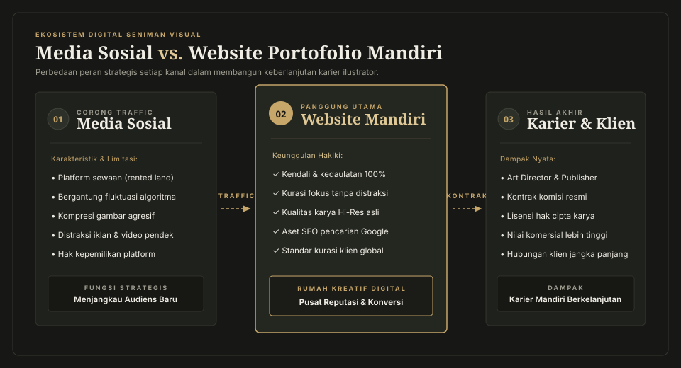

Di era pesatnya perkembangan industri kreatif dan ekosistem digital saat ini, platform media sosial seperti Instagram, X (Twitter), ArtStation, hingga TikTok kerap dianggap sebagai panggung utama bagi seorang seniman. Banyak ilustrator lepas (freelance illustrator), desainer karakter, maupun kreator visual pemula menggantungkan seluruh eksistensi karier dan portofolio mereka pada platform-platform pihak ketiga tersebut. Mendapatkan puluhan ribu tanda suka (likes) dan komentar apresiatif memang terasa memuaskan secara instan. Namun, timbul satu pertanyaan fundamental: apakah ketergantungan pada media sosial cukup untuk menopang karier kreatif yang profesional dan berkelanjutan?
Jawabannya jelas: tidak cukup. Media sosial pada hakikatnya adalah "tanah sewaan" (rented land). Kapan pun algoritma diubah oleh pemilik platform, kebijakan monetisasi berganti, atau akun mendadak terkena pembatasan tanpa penjelasan transparan, akses Anda ke audiens dan calon klien bisa lenyap seketika. Di sinilah letak pentingnya website portofolio ilustrator sebagai rumah mandiri yang kokoh, berdaulat, dan menjadi pusat kendali penuh atas identitas artistik Anda.
"Menggantungkan seluruh portofolio kreatif hanya pada media sosial sama seperti mendirikan galeri seni megah di atas tanah sewaan yang bisa digusur kapan saja oleh pemilik lahan tanpa pemberitahuan."
— Catatan Atelier Ginje, 20261. Kepemilikan Digital Penuh: Terbebas dari Tirani Algoritma
Kelemahan paling mencolok dari media sosial adalah algoritma distribusinya yang fluktuatif. Karya ilustrasi yang Anda kerjakan dengan ketelitian tinggi selama puluhan jam sering kali hanya berumur beberapa jam di linimasa (feed) sebelum tenggelam oleh gelombang postingan lain, iklan bersponsor, atau video pendek viral. Seniman kerap dipaksa mengikuti format tren—seperti membuat video proses singkat atau konten sensasional—yang sering kali menguras energi produktif dan mengaburkan esensi karya seni itu sendiri.
Dengan memiliki website portofolio mandiri, Anda memiliki kedaulatan digital mutlak. Tidak ada algoritma yang membatasi siapa yang boleh melihat karya Anda, tidak ada linimasa yang menuntut Anda mengunggah konten setiap hari, dan tidak ada kompetisi dengan konten lain di halaman yang sama. Pengunjung yang mengakses situs Anda memberikan atensi penuh 100% pada karya dan narasi visual yang Anda bangun.

2. Standar Kredibilitas dan Profesionalisme di Hadapan Klien Global
Bagi para pengarah seni (art director), kurator pameran, editor penerbit buku, studio game, maupun agensi periklanan internasional, waktu adalah aset yang sangat berharga. Ketika mencari talenta ilustrator untuk menangani proyek besar, mereka jarang memiliki waktu untuk menggulir linimasa media sosial yang bercampur dengan unggahan pribadi, meme, atau percakapan informal.
Website portofolio yang tertata rapi memberikan sinyal keseriusan dan profesionalitas yang tak terbantahkan. Menampilkan nama domain pribadi dengan antarmuka yang bersih membuktikan bahwa Anda mengelola karya visual sebagai sebuah entitas profesional. Calon klien dapat mengevaluasi konsistensi gaya, kualitas garis, dan spesialisasi Anda hanya dalam hitungan detik—sebagaimana yang kami terapkan pada kurasi pilihan karya Ginje Atelier.
3. Pengalaman Kurasi Visual Bebas Kompresi dan Distraksi
Salah satu masalah teknis terbesar seniman visual di media sosial adalah degradasi mutu gambar akibat kompresi otomatis yang agresif. Sapuan kuas bertekstur (brushwork), permainan gradasi halus, hingga detail mikro pada latar belakang sering kali hancur atau kabur.
Pada website pribadi, Anda memegang kendali penuh atas resolusi dan penyajian gambar. Anda dapat menampilkan karya dalam ketajaman visual terbaik, mengimplementasikan fitur pembesar detail, hingga menyajikan studi kasus komprehensif (case study). Anda bisa membedah sketsa konsep awal, eksplorasi palet warna, hingga filosofi dunia fiksi yang dibangun, seperti yang kami uraikan dalam bab pendekatan filosofi visual kami.
4. Optimasi Mesin Pencari (SEO): Menarik Klien Secara Pasif 24/7
Media sosial umumnya bersifat tertutup (walled garden); postingan gambar jarang terindeks secara optimal di mesin pencari umum. Sebaliknya, website yang dibangun dengan kaidah semantik yang tepat dapat diindeks oleh Google secara mendalam melalui teknik Search Engine Optimization (SEO).
Dengan menargetkan kata kunci spesifik yang sering dicari pengguna—seperti "ilustrator desain karakter", "jasa ilustrasi buku fantasi", atau "visual storytelling studio"—website Anda bekerja layaknya agen pemasaran pribadi tanpa henti selama 24 jam sehari. Merujuk pada panduan resmi Google Search Central SEO Starter Guide, struktur konten yang jelas, navigasi hierarkis, serta kecepatan muat halaman yang optimal merupakan kunci utama untuk memenangkan peringkat organik di hasil pencarian.
Ringkasan: 5 Keuntungan Utama Website Portofolio bagi Seniman
- Kontrol dan Kepemilikan 100%: Terbebas dari risiko penutupan platform dan perubahan algoritma mendadak.
- Kredibilitas Profesional: Mempermudah kurator dan art director internasional dalam mengevaluasi portofolio.
- Kualitas Gambar Asli: Menampilkan detail karya dalam resolusi tinggi tanpa kompresi platform.
- Pemasaran Pasif via SEO: Menarik prospek klien baru secara organik melalui pencarian Google.
- Personalisasi Branding Penuh: Tata letak, tipografi, dan warna disesuaikan dengan estetika artistik sang kreator.
5. Narasi Personal dan Ekstensi Dunia Visual (Worldbuilding)
Karya seni visual yang berkesan selalu memiliki narasi di belakangnya. Di media sosial, seluruh kreator dibatasi oleh format tata letak kotak yang seragam. Namun, di dalam website portofolio mandiri, desain halaman web itu sendiri bertransformasi menjadi ekstensi dari gaya seni Anda.
Mulai dari pemilihan tipografi klasik serif yang anggun, aksen emas tematik, hingga tempo transisi antarbagian—semuanya menyatu menciptakan sebuah atmosfer yang imersif. Pengunjung tidak hanya sekadar melihat gambar, tetapi dibawa masuk menyelami semesta visual yang Anda rancang.
Kesimpulan: Waktunya Membangun Galeri Abadi Anda
Media sosial tentu tetap memiliki peran berharga sebagai corong penjangkau (traffic generator) dan tempat berinteraksi dengan komunitas sesama seniman. Namun, media sosial sebaiknya diposisikan sebagai jembatan, bukan tujuan akhir. Muara utama dari seluruh reputasi, legalitas karya, kontak komersial, dan kurasi terbaik Anda harus berpusat pada sebuah website portofolio mandiri.
Membangun website portofolio pribadi bukanlah sekadar pemenuhan formalitas digital, melainkan investasi strategis jangka panjang bagi kelangsungan karier kreatif Anda. Jadikan website Anda sebagai kanvas abadi tempat karya-karya terbaik Anda diapresiasi dengan penuh martabat dan kebebasan.
Sumber & Bacaan Berguna:
- Google Search Central (2025) — Search Engine Optimization (SEO) Starter Guide . Panduan resmi dasar optimasi mesin pencari untuk arsitektur web modern.
- ArtStation Magazine (2024) — Building a Standout Industry Portfolio: Insights from Art Directors . Tinjauan kriteria kurasi portofolio profesional untuk industri kreatif.
- W3C Web Accessibility Initiative (WAI) — Introduction to Web Accessibility . Standar penyusunan konten visual yang inklusif dan ramah pembaca layar.